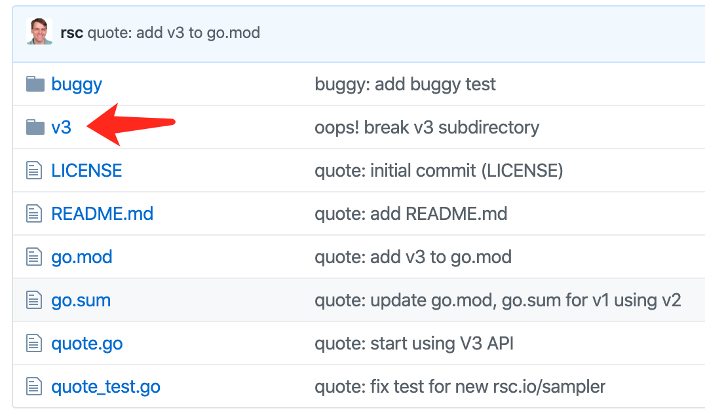

Go 语言项目的代码管理
为什么把这一节放在最前面？因为这就是最首要的事情。
Go 项目的源代码管理是一个老大难的问题，Russ Cox 在《A Proposal for Package Versioning in Go》中详细介绍了整个过程：最开始毫无办法，然后鼓励社区自己解决，于是 godep、glide 等遍地开花，人人苦恼，最后 Russ Cox 灵机一动，设计了 go module。
从 1.13 开始，GOPATH 不再是必须的，Go 的项目代码可以位于任意位置，只要使用了 go module。Go blog 用了整整 4 篇博客介绍它的用法：
把这四篇博客看完，就可以告别本页了。
要解决的问题
最早的时候 go get 直接从 github 拉取 master 上的最新代码，问题特别大，以至于很多人的解决方法是把整个 GOPATH 目录作为项目目录，依赖代码的更新成为噩梦，不知道依赖的是哪个版本，至于依赖的依赖那就更 !@#$%^&*()......
后来 godep、glide、dep，以及 vendor 等分别解决了依赖代码管理的问题，但是仅此而已。在大型项目中，常常会使用一套代码的不同版本，这时候前面的各种工具就「摊手」了。
另外，项目必须位于 GOPATH 中、代码 repo 获取缓慢并占用本地空间等问题也让人烦恼。
问题解决方法
Russ Cox 通过引入版本管理方法 Semantic Versioning 限定了问题空间，然后重新设计了依赖代码的索引和获取方法，以及本地缓存机制。
依赖代码以及我们自己的 Go 语言项目需要采用 Semantic 版本命名法，也就是 vMAJOR.MINOR.PATCH-suffix ，约定如下：
- 只有不向后兼容的时候，譬如修改了 API 时，才可以变更主版本
- 同一个主版本下的多个子版本，对用户而言可以无脑升级，无需重新适配
- v0.x.x 版本是最自由的版本，v1.x.x 开始要对用户负责
使用 Semantic Versioning 对 go module 来说很重要， 因为多版本依赖建立在该基础上：
- 同一套代码的多个主版本通过
/vX后缀区分（从 v2 开始需要后缀） - 不支持同时引用同一主版本的多个小版本
例如，同时依赖 rsc.io/quote 的 v1 和 v3 版本，用下面的方法：
import (
"rsc.io/quote"
quoteV3 "rsc.io/quote/v3"
)
这种做法有一个问题：为了向后兼容，即兼容没有使用 go module 的项目，新的主版本需要独占一个目录。
例如上面的 rsc.io/quote：

v3 不仅是真实存在的目录，而且是一个独立的 go module，它有自己的 v3/go.mod，内容如下：
module rsc.io/quote/v3
require rsc.io/sampler v1.3.0
这意味着开发 v3 的时候，需要把代码拷贝一份，代码仓库中会有很多冗余代码。 如果引用端使用了 go module，是否可以避免使用独立的主版本目录呢？下面通过试验验证，同时演示 go module 的常规用法。